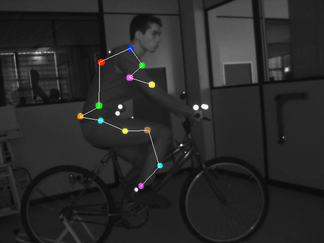

O objetivo deste trabalho é realizar
o rastreamento óptico de objetos.
Para tanto, você deverá desenvolver
um programa que lê um vídeo e identificar os pontos em movimento e
realizar o rastreamento.
ATENÇÃO: O programa deve
ser desenvolvido com a biblioteca de acesso à imagens de vídeo, que
está sendo disponibilizada nesta página.
O vídeo a ser processado está disponível neste link e o frame inicial pode ser visto na figura a seguir.

Figura - Frame inicial do vídeo da caminhada virtual
Este vídeo for gerado a partir de dados de uma caminhada real. Cada ponto branco conectado por linhas corresponde a um marcador colocado na perna ou do pé de uma pessoa, caminhado sobre uma esteira ergométrica.
Inicialmente você deve segmentar o vídeo, isolando os marcadores a serem rastreados.
A seguir, o programa deve identificar, ao longo do vídeo, cada marcador em todos os frames.
Para apresentar o funcionamento com mais clareza, o programa deverá colorir ou rotular(com número, ou letra) cada uma dos marcadores de maneira diferente no frame inicial e as cores ou rótulos devem ser mantidas ao longo dos demais frames do vídeo.
Devem ser implementadas 3 formas de rastreamento, considerando que um marcador A já foi identificado e rotulado no frame F:
- ponto mais próximo: neste método, a identificação do marcador A no frame F+1 se dá localizando-se, neste frame, qual o marcador está mais próximo da posição que A tinha no frame anterior F;
- comparação de imagens: neste
método deve-se comparar as imagens ao redor dos pontos anatômicos
identificados e verificar no frame seguinte qual a imagem "parecida"
com a iamgem que está ao redor do marcador no frame anterior. Esta
comparação deve ser feita com o base no algoritmo descrito nesta página
http://en.wikipedia.org/wiki/Sum_of_absolute_differences;
- rastreamento baseado em modelo: como
o vídeo retrata uma pessoa caminhando, o comprimento dos segmentos não
muda. Logo, sabendo-se a rotulagem no primeiro frame, pode-se realizar
o rastreamento a partir das distâncias esperadas entre os marcadores.
O programa deve ter também a opção de
rastrear apenas 1 marcador, a ser indicado pelo usuário, com mouse ou
teclado. Este rastreamento deve ser possível com qualquer dos métodos a
serem desenvolvidos.
Durante a execução do programa deve ser possível avançar e retroceder o vídeo, apresentando o resuldado do rastreamento.
Avaliação
A avaliação do trabalho segue os critérios descritos na tabela a seguir.
| Rastreamento pelo ponto mais próximo |
3 pontos
|
| Rastreamento por comparação de imagens |
3 pontos
|
| Rastreamento baseado em modelo |
2 pontos
|
Possibilidade de apresentar o rastreamento de 1 ponto ou de todos os pontos
|
2 pontos |
Utilização de Imagens de Vídeo
Para usar vídeos, utilize o projeto disponível neste link. Abra o projeto exemploGLUT.cbp e, no fonte AVITest-THREE.cpp, observe a função a função void init(void).
Maiores detalhes de como usar a biblioteca de carga de vídeo, podem ser obtidos nesta página.
Exemplo de Vídeo (não vale como teste para os algoritmos)
Outro vídeo, mostrado na figura a seguir, pode ser obtido neste link.
Este vídeo existe um objeto real atravessando a cena e também 4 objetos
definindo os "cantos" do cenário.
Para converter vídeos, siga os seguites passos:
- Capture o video utilizando programas como MovieMaker, AMCap, ou IMLAB (http://imlab.sourceforge.net/);
- Grave os vídeos no formato WMV;
- A
seguir, os vídeos devem ser convetidos para do formato AVI com um codec
específico, o CINEPACK. Para tanto, utilize o programa im_copy, da
seguinte forma;
- im_copy video_cam1.wmv video_cam1.avi AVI CINEPACK
- Este comando irá converter o arquivo vídeo video_cam1.wmv para video_cam1.avi, usando o codec CINEPACK.
- A partir disto, utilize o projeto disponível neste link para ler e exibir o vídeo.